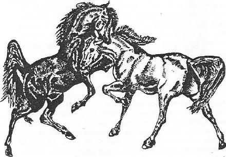

Dünyada birçok milletler ayrı ayrı devlet kurmuşlar ve ayrı devletler sahip olmuşlardı. Bazı kavimler ise tarih boyunca ancak bir devlet kurabilmişlerdi. Kurulan bu tek devletin tarihi yazılabilmişti; fakat o milletin kalbine ve an'anesine devlet kurma ve idare etme mefhumu bir türlü girememişti. Eski Yunan sitelerinde olduğu gibi küçük bir şehre veya küçük bir vadiye sıkışıp kalan devletçiklerin halklarında devlet mefhumu, ancak bir teori veya fikir spekülasyonundan ibaret kalmıştı. Orta Asya, Çin ve Roma gibi büyük devlet ve kavimlerde ise devlet fikri, ilk oluşunu ve şeklini aile inanış ve kuruluşlarından alarak gelişmişlerdi. Bu sebeple bir devlet yıkılsa bile, ailenin ve kişilerin iliklerine kadar işlemiş olan bu köklü an'ane sebebi ile yeni bir devletin kuruluşu olağan bir iş haline gelmişti.
Bundan da anlaşılıyor ki bir devlet fikri ve anlayışı, an'anelerin ve dinsel inançların temelinde yatar. Mitolojiler ve efsaneler ise bu devlet fikrine bir açıklık ile objektiflik verir ve devlet anlayışını sembollerle anlatırlardı.
Bazı sosyolog veya hukukçuların ara sıra tasnif ettikleri, "Teokratik Devlet", vs. gibi devlet tipleri, henüz daha gerçeği ifadeden uzak ve teorik kalmış sıralamalardır. Bugün dinin yerine başka fikirler geçmiştir. Fakat eski devletin esas prensipleri aşağı yukarı yine devam etmektedir. Bu sebeple Türk devletlerinin dinsel ve mitolojik temellerini incelerken, böyle dar ve gerçekle ne derece ilgili olduklarını henüz daha kimsenin bilmediği, kesin sınıflamaların tesiri altına girmemeğe çalışacağız. Ayrıca son senelerde memleketimizde bazı değerli meslektaşlarımızın, Türklerin teokratik devlet telâkkisinden, "İmperium" anlayışına nasıl geçtikleri hakkındaki teorilerine de iltifat edemeyeceğiz. Şunu unutmamak lâzımdır ki, Fatih'den sonra Osmanlı Devletinde bazı şehzadeler Anadolu'ya artık vali olarak gönderilmiyor idiyseler, bunun sebebi Osmanlı devletinde bir "İmperium", merkezden idare edilme, zihniyetinin doğuşu, daha doğrusu devlet telâkkisinde erişilmiş bir reform değildir. Bu, daha çok basit ve kişisel korkulara dayanan bir gerileme idi. Esasen meselelerin iyice derinine girmeden, teokratik devletler içine koyduğumuz eski Türk devletlerinde, gerçek bir imperium tatbikatının bulunup bulunmadığını da, incelemiş olamayız. 1967 de Manchester'de toplanan Altaistler Kongresinde verdiğimiz "Moğol Devletinde Sivil İdare" adlı tebliğimizde bu konuya dokunmuş ve meselelerin derinine gitmeden büyük teoriler kurmağa giden meslektaşlarımızdan şikâyet etmiştik. Gerçekten Çingiz Han'ın devleti oğulları arasında taksim edilmişti. Bu, eski bir devlet fikri ve anlayışına dayanmış olabilirdi. Ama hiç bir prens, başkent Kara-Korum'da oturan Baş Kâtip (Uluğ Bitikçi) veya Sadrazam Çinkay'ın mührü veya imzası olmadan yeni bir vergi koyamaz veya büyük bir memur tayin edemezdi. Ölüm cezaları için de başkentin onayı alınırdı. Sivil ve yüksek bir memur olan Türk asıllı Mahmud Yalavaç'ın saygısı büyük Moğol İmparatorlarından daha çoktu. Bunu teokratik devlet düşüncesi ile nasıl uyuşturabiliriz? Mahmud Yalavaç, yalnızca bir maliyeci idi.
İşte yukarıdaki sebeplerden dolayı, burada konumuzu incelemeğe başlarken, yalnızca vesikaları göz önünde tutup, başka hiç bir kimsenin tesirinde kalmamağa çalışacağız. Bunun için de vesikaları eksiksiz olarak toplayıp, komşu kültürlerle mukayese ederek, konumuzu mümkün olduğu kadar bir aydınlığa kavuşturmağa gayret edeceğiz. Bunları söylemekten maksadımız, eski Türkleri en doğru yönleri ile tanıyalım ve eski teorilerin tesiri altında kalmayalım diyedir.
"Dünya Devleti" düşüncesi ve bu düşüncenin gerçekleştirilmesi, Dünya Tarihinde ancak bir kaç millete nasip olmuştur. Bu tür devlet düşüncesi, Türklerin devlet anlayışının kökünde ve mayasında vardır. Bu anlayış çok eski çağlarda doğmuş ve din düşüncesinin içinde yer almıştı. Sonra da bu düşünce, bir mitoloji olarak Türkler tarafından anlatılmış ve onları gütmüştür. Bu, aile düşüncesinin ve düzeninin içine sızmış. Bir an'ane olmuş, kanun gibi yasaklar koyan bir töre olmuş ve Türk milleti inanır olmuştu, bunun tek doğru yol olduğuna. Ortaya çıkan kuvvetli kişiler, bu yolu tutarak, ellerinde bir meşale gibi aynı prensiplerle yürümüşlerdi. Millet de onlara inanmış. Şan ve şerefle dolu bir tarih meydana gelmiş. Birçok Türk devletleri batmış ama yine aynı veya benzer düzenlerle ortaya çıkmıştı.
Ortaasya’nın tabiatı ve hayat düzeni, Türk devlet düşüncesinin meydana gelişinde en önemli faktör olmuştur. Sıcağı soğuğu, güneşi, yaylaları, ormanları, çölleri bol bir ülke. Dağlar göklere değercesine büyük. Ama toprak ana verimsiz. Verimli olsa bile, tarlalarda pirinç veya buğday ekmek, yaylalarda at yetiştirmekten daha mı kârlı olacaktı? Ziraatçılık, on binlik sürülerin getirdiği gelirlerden daha mı verimli idi? Her gün tabiat ananın içinde bulunmak, sabahtan akşama kadar hareketli bir hayat yaşamak, bazı insanlar için daha az mı zevkliydi? Bu sebeple bir tarihçinin tek hayat düzenini ele alarak, onu övüp göklere çıkarması ve diğer hayat düzenlerine sahip olan milletleri ise, vahşilik ve iptidailik damgası ile damgalaması, ilim adamlarının tarafsızlığına uymayan bir harekettir. Düşünelim ki, eski Yunanistan'da üç kişi bir fikrin etrafında toplanamazken, Orta Asya’da milyonları, ve kıt'aları emrinde toplayan büyük imparatorluklar kuruluyordu.

Şekil 36: Çin tarihlerine göre "Kuzey Türkleri" her sene at güreşleri düzenler ve birinci gelen atın soyunu türetirler.
Orta Asya Türk halkları at çobanı idiler. Tarihçiler, böyle at sürüleri besleyip yetiştiren kavimlere "Atlı Nomad ", yani "atlı göçebe" derlerdi. Bu milletlerin başlıcaları, Orta Asya halkları ile Cermenlerin doğuda, Güney Rusya'da oturan bölümlerinden gelen Got'lardı. Atlı Cermenlerin hayat ve kültür düzenleri Alman bilginleri tarafından çok daha iyi işlenmiştir. Bu sebeple, Almanların izledikleri bilim metodu ve sonuçlar, bizim için de çok faydalı olmakta ve Orta Asya atlı kavimlerinin hayatını anlama yönünden bize bir ışık tutmaktadırlar. Şunu unutmayalım ki, bizim buradaki konumuz, eski Türklerin içtimaî teşkilâtı değildir. Biz kendimizi burada, yalnızca eski Türk devlet fikrinin ve içtimaî teşkilâtının, Türk mitolojisindeki yankılarını izlemekle görevli tutuyoruz.
İnsanlar tabiatı nasıl anlamışlar ve nasıl anlatmışlardı? Bu, mitolojinin bir konusudur. Bir Çinli, sabahtan akşama kadar pirinç tarlasında çalışıp didindikten sonra evine dönüp de, şöyle bir düşünmeğe vakit bulduğu zaman, ilk hatırına gelen şey, türlü zehirli hayvanlarla, yılanlar ve ormanda dolaşan kaplanlar olurdu. Kaplumbağalar, kurbağalar vs. gibi zararsız hayvanlar da bunların yanında sıralanırdı. Yağmur ve bereket, onun günlük ve en önemli gailesidir. Çinlinin düşünce hayatı, bu âlemin dışında kalamazdı. Onun efsaneleri, dini, kendi hayatının bu aktörleri ile örgütlenmiştir. Tabiatüstü güçlere de sahip olmak ister. Ama yine kendi çevresinin kahramanlarından seçer bunları. Onun rutubetli ve güneşsiz evi, düşüncesini ve dehasını sınırlamıştı. Onun dışına çıkamaz. Hayat düzenini de ona göre kurardı.
Orta Asyalı bir atlı göçebenin ise hayatı başka türlüdür. Onun yerle, böceklerle, kaplumbağa ile ilgisi yoktur. Yaz günlerinde alabildiğine parlak bir güneş ve açık bir gök; kış günlerinde ise dondurucu bir soğuk ve etrafta uluyan kurtlar vardır. Sürüsü vardır. Bu sürü yaşamalıdır. Otlar ve sular onun hayatının en önemli unsurlarıdır. Her sabah doğudan doğan güneş, ona en parlak ve en saygı değer bir şey olarak görülür. Ona iyilikler ve felâketler veren gök, ona en yakın olanıdır. Tek Tanrıya inanan insanlar, niçin çöllerden ve bozkırlardan çıkmıştır? Bunların gerçek sebebi, hep tabiat ve coğrafya şartlarının içinde yaşar. Orta Asyalı göçebeler, sürülerinin içinde bir çoban hayatı yaşamazlardı. Onların sürüleri yaylalarda, çobanları tarafından otlatılırdı. Bu hayatın çok güzel tasvirlerini Manas destanının içinde bulunuyoruz. Çobanların da bir başı bulunurdu. Manas destanındaki baş çobanın adı Kara-Beğ'dir. Türklerde "Beğ" lik, bir görev ve mesuliyeti yüklenme ünvanıdır. Bundan da anlaşılıyor ki Türkler, at sürülerini gütme ve koruma işlerini bir memurun üzerine veriyor ve kendileri, içtimaî gelişme ve yaşama için en münasip bir yeri seçerek, obalarını oraya kuruyorlardı. Oba, ister büyük, isterse küçük olsun; hatta bir ailelik de olsa, asırlardan beri gelen kaidelere ve töreye göre kurulur ve yine aynı töreye göre idare edilirdi. Her isteyen, her istediği yerde obasını kurup, sürülerini salamazdı. Her kabilenin, her obanın belirli bir otlağı vardı ve bu otlak, kuvvetli bir devlet varsa, devlet tarafından; yoksa töreye veya kuvvete dayanılarak sınırlandırılırdı. Eski Türkçede bu belirli arazi parçasına "İl", Osmanlılar devrinde ise "Yurtluk" denirdi. Bu sebeple konargöçer olmalarına rağmen, bir yurt ve il sevgisi vardı kendilerinde. Askerlik ruhu ve askerî teşkilât ise, obanın kuruluş ve yaşayışının içine sinmişti.
Askerlik ruhu oba teşkilâtının içine nasıl sinmesindi ki? Orta Asya, eski küçük Yunan siteleri gibi değildi. Eski Yunanistan'da düşmanın geldiği gözcüler tarafından haber verilebilirdi. Ama koşar adım bile gelse düşman, kaç saatte kendilerine yetişebilirdi? Böyle durumlarda eski Yunanlının harbe girmesi için, bir öğle yemeği yiyip öğle uykusunu almağa bile vakti vardı. Fakat Orta Asya’da öyle midir? Gelenler atlıdır. Hem de seçme atlı. İleri karakoldaki nöbetçi askerler, düşman geliyor dedikten on dakika sonra, düşman atlıları obanın içini alt üst edebilirlerdi. Düşününüz ki bir toplum, binlerce seneden beri aynı hayatı yaşar ve aynı tehlikeleri her an burnunun dibinde hissederse, nasıl bir düzene girer ve nasıl teşkilatlanırdı? Atlı toplumların çok az bir zamanda hazırlanması lâzımdı. Eli silâh tutan ve düşmana karşı koyabilecek kimseler, nerede ve nasıl göreve başlayacaklarını çok önceden bilmeliydiler. Kadınları ve çocukları kimlerin, nasıl ve nerede koruyacakları kesin kaidelerle belirtilmiş olmalıydı. Bütün bunları topluma kim talim ettirir ve öğretir; Hiç kimse! Yalnızca asırlardan beri devam eden ve olgunlaşan "Töre" ve toplumun köklü an'anesi, bu askerlik hazırlığını meydana getirir ve düzenlerdi.
Bir oba, bir yerden göçüp başka bir yere konduğu zaman, çadırlar bir daire meydana getirecek bir şekilde kurulurlardı. Kuzeyde, güneyde ve diğer yönlerde kimlerin çadırlarının kurulacağı, törece belirtilmişti. Kabile reisinin çadırının sağında ve solunda kimlerinki bulunacaktı. Bütün bunların hepsi, eski Türk toplumlarınca çok iyi bilinen kaidelerdi. Hiç bir kimse törenin çizdiği bu usullerin dışına çıkamazdı. Şunu unutmamalıyız ki, bütün bu kaidelerin kökleri dinsel düşüncelere dayatılmış ve ayrıca asırlarca pratik olarak da tecrübe edilmişti. Çadırın içinde bile, aile reisinin nerede oturacağı belli idi. Türkler çadırdaki bu şeref yerine "Tör" derlerdi. Hatunun, çocukların, akrabaların veya daha uzak kimselerin nerelerde oturacakları da bilinen şeylerdendi.
Bir çadırda herkesin bağlı olduğu oturma protokolü, ufak farklarla kabile teşkilâtında ve dolayısıyla devletin kuruluşunda da görülürdü. Devlet teşkilâtı da, Türklerin dünya veya uzay anlayışına paralel giderdi.
Bu düşünce, Türklerin devlet anlayışının temelinde vardır. Eski Türklere göre bütün dünyanın insanları, Türk devletinin halkı, Türk hükümdarı ise dünyanın hakanı idi. Hukuk tarihinde bu tür devlet anlayışına "Üniversal Devlet", bu düşünceye dayanan doktrine de ''Universalismus'' denir. Aslında "Universe", dünya, bütün cihanı içine alan mekân anlamına gelir. Esasen yukarıda da söylediğimiz gibi, bizim buradaki konumuz, eski Türklerin devlet teşkilatını veya devlet anlayışlarını incelemek değildir. Ancak Türklerin dünyayı nasıl anladıklarını ve anlattıklarını öğrenebilmek için, bu mesele üzerinde durmak da zorunludur. Ayrıca eğer Türk mitolojisi ve dinsel inanışlar, devlet teşkilâtı ile işleyişi üzerinde etkilerde bulunmuşsa, bu konu da mitoloji meselelerinin içine girer demektir. Türk kabile teşkilâtı veya Oğuz Türklerinin bölümlere ayrılması, Oğuz Destanındaki esaslara uyuyorsa böyle bir benzeyiş, bir kavim olarak Türklerin, bir millet şuuruna sahip olduklarını ve bunu nazariyesiyle, pratiğiyle ispat ettiklerini gösteren en önemli bir delildi.
Diğer bölümlerimizde geniş olarak gösterdiğimiz gibi, eski Türklerin de dünyanın kuruluşu, yönleri, bölümleri vs. hakkında kendilerine göre inanışları ve bilgileri vardı. Kendi kurdukları devletleri de, kendi dünyalarının içine yerleştiriyorlardı. Bu sebeple dünya düzeni ile devlet teşkilâtı arasında da bir benzerlik ve uygunluk meydana geliyordu. Güneşin doğuşu, batışı, gece gündüz, yer ve gök, büyük dağlar, kutsal ormanlar devlet teşkilâtında ve idaresinde birer sembol mahiyetinde de olsalar, çok önemli rol oynuyorlardı. Böylece devlet düşüncesi, kendi yankılarını bol olarak mitoloji de de gösteriyordu. Devletin doğu tarafı, güneşin doğduğu taraf olması sebebiyle önem kazanıyordu. Hâlbuki Göktürk devletinin Batı tarafları, Doğu’ya nazaran daha zengin topraklara sahip idiler. Göktürk Devletini kuran kalabalık Türk kabileleri de batı bölgelerinde yaşıyorlardı. Asıl Gök-Türk Devleti batıdaki on kabile tarafından kurulduğu halde, devlet kurulduktan sonra başkentin, doğudaki Orhun nehrinin kaynaklarında bulunan Ötügen'e kaldırıldığını görüyoruz. Büyük Hun Devletinin, Uygur Kağanlığının, Çingiz-Han imparatorluğunun başkenti de hep bu Ötügen’ de idiler. Niçin başkentler burada kuruluyordu? Bunun sebebi de gayet basitti. Çünkü Ötügen Ormanı (Ötügen Yış) ve Ötügen Yer'i kutsal idi. Avar (Juan-Juan) Devleti Gobi çölünün ta güneylerinde, yani Çin'in doğusundaki bölgede kurulmuştu. Bu devlet de kurulur kurulmaz, başkenti derhal Ötügen'e kaldırıldı. Tıpkı Göktürk Devleti gibi. Belki Ötügen bölgesi, yeni kurulan bir devlet için pek stratejik olmayabilirdi. Göktürkler gibi batıda kalan esas Türk kitlelerinin desteğinden de mahrum kalınabilirdi. Ötügen'in başkent yapılmadığını farz edelim. Acaba ne olurdu? Orta Asya halkları bu yeni devleti tanıyıp ona tâbi olurlar mıydı? Kubilay Han'ın Moğol Devletinin başkentini buradan kaldırıp, abadan, güzel, tıpkı cennet gibi bir şehir olan Peking'e kaldırması, Çingiz-Han İmparatorluğu’nun bile parçalanmasına sebep olmuştu.
Başka bir örnek daha verelim: Türgeş Devleti, Batı Göktürk Devletinin on kabilesi tarafından kurulmuştu. On kabileden beşi doğuda, İli Nehri kenarlarında; diğer beşi de batıda, bereketli ve zengin Çu ve Talaş nehirlerinin vadilerinde yaşıyorlardı. Devlet, doğudaki beş kabile tarafından kurulmuştu. Doğudaki bu kabileler, daha asil Türk boyları oldukları için bu devlete "Sarı" Türgeş Devleti denmiştir. M.S. 716 da Sarı Türgeş Devleti yıkılınca, yerine batıdaki beş kabile tarafından Kara Türgeş devleti kuruldu. Kara Türgeş devletini kuran batıdaki beş kabile, hem zenginlik ve hem de halk sayısı bakımından daha kuvvetli idiler. Fakat ne zenginlik ve nede güç, onları "Kara" lakabını almadan kurtaramamıştı. Çünkü an'ane ve Türk tarihinin özellikleri böyle gerektiriyordu.
Her çağda ve her yerde olduğu gibi, Türklerde de yüksek bir devlet felsefesi ve bunun yanında da bir halk mistisizmi vardı. Bu ikisini birbirine karıştırmak doğru değildir. Elbette ki bu yüksek devlet mefhumunun temelleri halk inançlarının içindeydi. Köklerini de halkın düşüncesinin içinden alıyordu. Ama devlet zihniyeti, asırların tecrübesi ile gerçekçi bir yola girmişti. Bu sebeple devletin yapısı ve idaresi hakkındaki fikirler, berrak, açık ve anlaşılabilir bir hale gelmişti. Türklerin devlet anlayışında, toplum hayatının sırları çözülmüş ve pratik hayatta defalarca tecrübe edilmişti. Şunu bilhassa söylemek isteriz ki, birçok büyük devletler kurmuş ve idare etmiş Türk halkları için de, durum böyledir. Ama Çingiz imparatorluğuna bir göz atalım. Bir yandan eski Orta Asya Türk Devletlerinin yüksek devlet anlayışı ve idaresi uygulanırken, diğer yandan da, eski, iptidaî Moğol kabile an'anesinin devlet idaresinde sık sık kendini gösterip, devleti sıkıştırdığını görmekten geri kalmayız. Meselâ eski Türk Devletlerinde bir hükümdar ölürse onun tabii vârisi, hükümdarın büyük oğlu idi. Çingiz-Han devletinde de, bu eski kaideye riayet edilmek istendiği açık olarak görülmektedir. Meselâ Kubilay-Han, Toluy'un Mengü Han'dan sonra gelen büyük oğlu olduğu için, Peking'de bu töreye riayet edilerek büyük Han ilân edilmişti. Çünkü bu sırada Mengü-Han ölmüştü. Fakat eski Türk ve Moğolların kabile ve aile an'anesinde ise, baba ocağını devam ettiren çocuk, en küçük oğuldu. Bunun için Türk masallarında da en büyük önem, küçük oğullara verilmişti. Diğer oğullar evlendikten sonra baba ocağından dışarıya çıkarlar; fakat küçük oğul, hatunuyla baba ocağında kalırdı. Bu sebeple babanın mirasının büyük kısmı da küçük oğula kalırdı. Fakat malın idaresine büyük oğul bakardı. Meselâ Çingiz Han, oğulları arasında görev bölümü yapmış ve kendisinden sonra hükümdarlığa ikinci oğlu Ögödey'i tayin etmişti. Fakat Çingiz-Han'ın en değerli malı sayılan ordusu, en küçük oğlu Toluy'a kalmıştı. Toluy, Çingiz-Han'ın sağlığında da başkomutandı. Yüksek devlet an'anesine göre Kubilay-Han, Büyük Han seçilince; en küçük kardeş olan Erig-Büge, kabile ve aile an'anesine göre önce kendisinin hükümdar olması gerektiğini iddia etti. Çingiz-Han gibi bir hükümdar, yerine Hakan olarak Ögödey'i tayin ettiği halde, en küçük oğlu olan Toluy'un çocukları, bu makamın kendilerine ait olduğunu ileri sürdüler ve hükümdarlığı Ögödey Han'ın soyundan zorla aldılar.
Görülüyor ki geri bir toplumdan gelerek bir Dünya imparatorluğu kuran bazı Orta Asyalılar, eski Türk devlet an'anesini kendilerine prensip olarak almış olmalarına rağmen, mistik kabile zihniyetini hafızalarından söküp atamamışlar ve bu iki ayrı devlet anlayışı, aynı devlet içinde sürekli olarak çarpışa gelmişti. Proto-Moğol kabilelerinin kültürce geri, güney kollarından biri olan Kitan'lar, M. S. 930’dan sonra Çin'in kuzeyinde bir devlet kurmuşlardı. Bu devlete Avrupalılar Hıtay ve Çinliler ise Liao Devleti derler. Devletin kurucusunun karısı, Uygur asillerinden birinin kızı idi. Devleti idare eden esas prensipler, Uygur ve Çin Devlet anlayışından alınmışlardı. Fakat senenin belirli zamanlarında yapılan dinî ve resmî törenler o kadar geri ve mistik bir inanışla düzenlenmişlerdi ki, sanki kendinizi en iptidaî bir kılan içinde yaşıyormuş gibi zannedersiniz.
Bunları niçin söylüyoruz? Bununla şunu söylemek istiyoruz ki Türklerin devlet anlayışı, hayat tecrübesi ile yoğrulmuş, mistisizmden arınmış ve bütün Orta Asya devletlerine en yüksek derecede örnek olmuş bir sistemdir. Buna rağmen Türklerin devlet anlayışı ve prensipleri de temellerini, zaman (Takvim) ve mekân (Dünya ve uzay)'ın değişmez sistemlerinden almıştır.
Bu duruma göre Türk devlet anlayışı, başlıca iki prensip üzerine kurulmuştu: 1. Zaman. 2. Mekân. Zaman sistemlerine göre işleyen Türk devlet teşkilâtının açıklamasını daha sonra yapacağız.
Mekân bakımından Türk devleti üç buutludur(boyutludur): 1. Enlemi: Doğu-Batı ekseni. 2. Diklemi: Güney-Kuzey ekseni. 3. Yüksekliği: Gökteki yüksekliği.
Dört yön ve gök, Türk devletinin mekânını meydana getiriyordu. Bu da esasını Türk dininden almış ve yankısını da Türk mitolojisinde göstermişti. Gerçi Türk budunu ve Türk devleti yeryüzünde idi ama; Türklerin zihninde devletlerinin mahiyeti daha başka türlü tasavvur ediliyordu. Onlara göre devlet içindeki mevkiler, gökten itibaren sıralanıyor, yeryüzünde de, sağa ve sola doğru dağılıyordu.
Dört yön de şüphesiz ki Türklerde çok önemlidir. Devlet teşkilatı bakımından, tatbikatta güney ve kuzeye önem verilmiyordu. Durum Çin’de de hemen hemen aynıdır. Çünkü Çin'de Doğu ile güney ayrı; batı ile kuzey ise, ayrı birer yön sayılırlardı. Doğu ile güney gök’tür. İmparator ve akrabaları orada otururlardı. Batı ile kuzey ise yerdir. Yerde, İmparatorun kadınları ile büyük memurları otururdu. Böyle bir anlayış, belki Türklerde de vardı. Ama bunu gösterebilecek vesikalar, elimizde maalesef yoktur.
Çin'deki bu düşünceyi örnek alarak, karşılaştırma suretiyle Türklerde bunun bir paralelini bulabiliriz. Ama bunun paraleli derken, Türklerdeki düşüncenin Çin'den alındığını veya ona tam olarak benzediğini ifade etmek istemiyoruz. Türk Devlet teşkilâtında Doğu-Batı yönleri daha ağır basardı. Doğu ve Batı yönlerini tek başına temsil eden büyük devlet memurlarını, Türk devletlerinde her zaman için görebiliyoruz. Fakat Güney-Kuzey yönlerini idare için, tek başına tayin edilmiş büyük memurlara rastlamıyoruz. Güneşin doğduğu taraf, doğu yönüdür. Türklerde en kutsal olan yön de, bu yöndür. Esas Türk kitlelerinin batı da olmasına rağmen, devletin önemli olan tarafları da, doğu bölümleriydi.
Yukarıda, yüksekliğine (Vertical) devlet anlayışından bahsetmiştik. Ayrıca Çin'de devletin gök tarafının, doğu ve güney tarafları olduğunu söylemiştik. İşte böyle bir kıyasa dayanarak, acaba şöyle bir fikri ortaya atamaz mıyız: Türklerde devletin, gök yanı, doğu tarafıydı. Çünkü Göktürklerde Büyük Kağan bu tarafta bulunuyordu. Büyük Hun devletinde ise Çin biçiminde, hem hükümdar ve hem de veliaht o tarafta idiler. Göktürk Devletinde hükümdar ve en yakın soyu doğuda bulunurken, batıyı Bumin-Kağan'ın küçük kardeşi İstemi-Kağan idare ediyordu. Kardeş, Türklerde tam soy sayılmazdı. Bu söylediklerimiz, ispatı güç, yalnızca karşılaştırma ve yakın Çin örnekleri yoluyla varılmak istenen faraziyelerden ibarettir. Fakat Türk tarihi incelemeleri o kadar fakirdir ki, artık böyle şeyleri faraziye de olsa yazıp geçmenin çok faydaları vardır. Türk düşüncesi üzerinde biraz düşünmek ve bazen de hayale dalma lâzımdır. Bu yazdıklarımız, tamamıyla dayanaksız da değildir. Sibirya halklarının, büyük nehirlerin geldiği güney taraflarının yukarı, yani gök; yine nehirlerin aktığı kuzey taraflarının ise aşağı, yani yer olduğunu söylemiştik. Yine aynı Sibirya halkları, nehirlerin Kuzey Buz denizine döküldüğü noktada ise artık yerin de sona erdiğine inanırlardı.
Türklerde yer ve su kültünün en birinci mümessilleri dağlardı. Bu yüksek dağların zirvesi, bazen Tanrıya ulaşır ve bunun için de bazı yüksek dağlara kurban kesilirdi. Sayın üstadımız Prof. Abdülkadir İnan, Şamanizm adlı eserinde bu konu üzerinde uzun uzun durmuştu, (s. 48). Sayın üstat bu konu üzerinde, din ve dinle ilgili merasimler dolayısıyla durmuşlardı. Biz ise bu inanışlardan Türk Devlet Teşkilatına biraz aydınlık vermek için, bazı izah yolları aramağa çalışacağız. Gerçekten Orta Asya'nın en kutsal dağları ve bölgesi olan Ötügen de, Göktürk devletinin doğu tarafından bulunuyordu. Tanrının dünyaya, dünyanın da Tanrıya en yakın olduğu yer, Ötügen olmalıydı. Yani Göktürk Devletinin Gök yanı, Ötügen bölgesiydi de diyebiliriz.
Göktürk yazıtlarında, Ötügen'in kutsallığından çok bahsedilir. Fakat yönlerin gösterilişinde, bu alçaklık veya yükseklik mefhumuna pek rastlamıyoruz. Yazıtlar yalnızca doğuya ön veya ileri, batıya da geri taraf derler. Ayrıca eski Türk devlet anlayışında, Çin'de olduğu gibi, doğu yönünün Gök, batı yönünün ise yer olduğuna dair herhangi bir belge veya kayıt da görmüyoruz. Öyle anlaşılıyor ki, Türk devlet anlayışı, Çin devlet anlayışına nazaran daha ileri idi. Türkler, din ve eski an'anelerin etkisinde olarak doğu tarafına kutsallık veriyorlar ve Tanrıya daha yakın bir bölge olduğuna inanıyorlardı. Fakat resmî kitabelerde, dünya ve devletin durumunu daha gerçekçi ve daha açık bir ifadeyle söylüyorlardı. Bu kitabımızda sık sık söyleyeceğimiz gibi, eski Türklerde devletin din anlayışı ile halkın inanışı arasında bir ayrılık vardı. Devletin dinle ilgisi, asırların tecrübesi, elde edilen zaferler ve felâketler, pratik hayatta öğrenilen şeylerle gerçekçi bir yola girmişti. Bu ayrılışların nedenleri buradan gelir. Bu iki fikrin devlet içinde çarpıştığını da yukarıda söylemiştik. Mistik halk an'anesi ise, gerçekçi devlet anlayışının yanında sık sık çıkışlar yapardı.
Eski Türk resmî yazıtlarına göre dünya dört kat idi: 1. Gök. 2. Kağan, yani hükümdar. 3. Kişioğlu, yani insanlar. 4. Yer. Bütün bunlar, gökle yer arasında sıralanmıştı. Tabii olarak, Tanrı'nın da göğün üstünde bir panteonu, yani maiyeti vardı. Fakat Tanrı ile Dünya devleti, kesin olarak birbirinden ayrılmışlardı. Göktürk yazıtlarında bu sıralama şöyle yapılıyor: Bu metin üzerinde, dünyanın yaratılışı ile ilgili bölümümüzde de durmuştuk. Fakat bu metin öyle önemli bir metindir ki, bir çok meselelerde ancak onun tuttuğu ışıkla doğru yolda yürüyebiliriz:
"Üze Kök Tengri, asra yağız yer kılındukda, ikin ara kişi oğlı kılınmış. Kişi oğlında üze, eçüm apam Bumın Kağan, îstetni Kağan olurmış". Yani, "Yukarıdaki mavi gök, aşağıdaki yağız yer yaratıldığında, ikisi arasında kişi oğlu, yani insanlar yaratılmış. Kişi oğlunun üzerine de büyük amcalarım Bumin Kağan ve İstemi Kağan (hükümdar) olarak tahta çıkmış."
Başka yerlerde de söylediğimiz gibi, yeri göğü yaratan bir tane Tanrı vardı. Türkler her ne kadar göğe Tanrı (Tengri) diyorlar idiyseler de, gök kendi kendine bir Tanrı değildi. Belki de Tanrı gök yönünde olduğu için öyle denmişti. Yaratılış sırasında önce gök, sonra yer, daha sonra da insanoğlu geliyordu. Türk Kağanı, insanları idare etmek için sonradan Tanrı tarafından, insanoğlunun üzerine tahta oturtulmuştu.
Eski Türkçe, bugünkü Türkçeye nazaran, daha kesin ve daha sağlam temellere göre kurulmuştu. Hemen hemen her mefhum için bir söz aranmış ve bulunmuştu. Bir sözün iki anlama geldiği çok seyrekti. İki şeyi birbiri üzerine koyalım. Meselâ masanın üzerine. Eğer masanın üzerindeki şey, masaya değerse, bunun için eski Türkler " Üst", yani "üstünde" sözünü kullanırlardı. Eğer o şey masanın üzerinde asılı veya boşta duruyorsa o durum için de, " Üze" derlerdi. Eski Türkçede "-re,-ra" eki, yön gösteren bir ekti. Bizim bugün kullandığımız "Üze-ri, üze-re" sözleri bu kökten gelmiştir. Almancadaki "oben" ve "auf" sözleri de, bu iki ayrı anlamı göstermek için kullanılırlar. Yukarıdaki Göktürk yazıtı parçasında, birbiri üzerine sıralanan katlar, hep "Üze" sözü ile ayrılmışlardır. Türklere göre en yukarıda gök, onun altında Kağan, yani hükümdar, hükümdarın altında insanoğlu ve insanoğlunun altında ise yer vardı. Bu her dört kat birbirleri üzerine oturmuyorlardı. Aralarında bir mesafe vardı. Hiç bir metinde, Türk hükümdarının insanların veya tebaasının üzerine basıp, adeta ezercesine oturduğuna dair bir belirti yoktur. Hakan, gökle yer arasındaki, kendi katında otururdu. Bu bakımdan Çin devlet ve hükümdar anlayışı ile Türklerinki arasında bir benzerlik vardı. Bu anlayış, Çinlilerden mi Türklere, yoksa Türklerden mi Çinlilere geçmişti? Bu, halâ münakaşa konusudur. Gök dini ve bu dinle ilgili kaideler, Orta Asyalı atlı göçebelere ait bir özelliktir. Bu devlet anlayışı Çin'de, ancak MÖ. 10. asırdan itibaren, Chou (Cov) Sülâlesi ile görülür. O da Çin mistisizmi ile karışık olarak meydana çıkmıştır. Fakat Çin'in yerli halk an'anesi ile bu yeni devlet anlayışı arasında büyük farklar vardı.
"Eski Türklerde kağanla insanoğlunun, yerle gök arasında, ayrı ayrı katlarda olduklarına dair başka bir belgemiz daha vardır. Bu da, Göktürk yazıtlarındadır. Göktürk yazıtlarına göre, Türk milleti yok olmasın, bir budun olsun diye Tanrı, İlteriş Kağanla hatununu tepesinden tutup, yukarı (Yügerü) götürmüş ve Türk milletinin başına kağan yapmış. Tanrı, her ikisini de tepesinden tutup yukarı götürmüştür. Diyebiliriz ki, yukarı kelimesi burada sembolik bir anlamda kullanılmıştır. Fakat şunu da unutmamalıyız ki, bu yazıtlar zamanımızdan 1200 sene evvel yazılmıştı. Bugün sembolik olarak kullandığımız sözlerin, o zaman da aynı şekilde kullanılıyordu, şeklinde dememize imkân yoktur. Yukarıda da söylediğimiz gibi o çağda, her sözün ayrı bir anlamı vardı. İlteriş Kağan, Tanrı tarafından saçından tutularak, insanla gök arasındaki kendi katına götürülmüş olmalıydı.
Eski Türk dininde, yerle gök arasında ayrılık ve mücadele yoktu: İran'da olduğu gibi, eski Türk inanışında yerle gök sürekli ve sonu gelmeyen bir vuruşma ve mücadele halinde değil idiler. Çin'de de yerle gök birbirlerinin düşmanları değildirler. Yer ve gök birbirini tamamlayan iki kutsal bütündü. Türklerde de bu her iki unsur, biri diğeri için lâzım olan iki vücuttan ibaret idiler.
Şekil 37: Bir avcının kartalları, kurtların elinden geyiği alıyorlar (Atkinson'dan).
Göğün, Tanrının; yerin de Şeytanın ülkesi olduğuna dair fikirler, Türk dinine sonradan, yeni zamanlarda Şamanizm yolu ile girmiştir. Eski Türkler dualarında, hem yerin ve hem de göğün yardımını istemekte idiler. Türk milletine ve onun hükümdarı olan Türk Hakanına, hem gök ve hem de yer yardım ederdi. Göktürk Yazıtlarındaki şu cümleler, dediklerimizi destekleyen canlı belgelerdir:
"Üze Türk Tengrisi, Türk ıduk yeri, subı inçe itmiş: "Türk Budun yok bolmasun," tiyin, 'Budun bolçun,' tiyin, kangım İlteriş Kaganıg, ögüm İl-Bilge Katunıg, Tengri töpüsinde tutup, yügerü kötürmiş erinç."
Yani : "Yukarıda Türk Tanrısı, Türkün kutsal yeri ve suyu şöyle yapmış: 'Türk Milleti yok olmasın', diye, 'bir millet olsun,' diye, babam İl-Teriş Kağan'ı, annem İl-Bilge Hatun'u Tanrı tepesinden tutup, yukarı götürmüş."
Yukarıdaki metinde de açık olarak görülüyor ki, Türk milleti yok olmasın diye, eskiden olduğu gibi yine bir millet olsun diye, Türkleri koruyan Gök Tanrı ile yine Türklerin kutsal yer ve suları, el birliği ederek, hep birlikte İl-Teriş Kağan'la Hatun'una, milleti toplayıp devleti yeniden kurmaları için yardım ediyorlardı.
Gökle yerin müşterek yardımı ile hükümdar olma ve başarıya ulaşma ile ilgili inanış Çingiz Han devrinde de vardır. Meselâ "Moğolların Gizli Tarih'inde (s. 113), Çingiz Han’ın, Camuka ve Toğrıl-Han'la şöyle bir konuşması vardır:
- "Han babam Toğrıl-Han ve andaşım Camuka'dan birer arkadaş gibi yardım gördüm. Gök ve yer'in yardımı ile kuvvetim arttı. Güçlü Tanrının takdiri ile ünvanımı aldım. Anamız Etügen'in yöneticiliği ile buraya geldik. Bunun için Merkit erkeklerinden intikam aldık. Onların halkının bağrını boş bıraktık..."
Moğolların Gizli Tarihi'nden alınan yukardaki metin, bizim anlayışımıza göre, yeniden tercüme edilerek verilmiştir. Çingiz Han'a iki arkadaşı insan olarak yardım etmişti. Gök ve yer ise onun gücünü artırmış ve başarıya ulaşmasını sağlamıştı. Bu başarısının sonucu olarak, Allah ona hükümdarlığı münasip görmüş ve yine Allah’ın takdiri ile İmparator ünvanını almıştı. Şimdiye kadar herkes bu metni "Çingiz Han, arkadaşlarının, Göğün, yerin, Tanrının, vs. nin yardımı ile" bu işleri yaptı diye, yuvarlak kelimelerle tercüme edip gitmişlerdi. Hâlbuki insanoğlunun yardımı başka, gök ve yerin yardımı başka, kutsal Etügen ruhunun ki ise başkadır. Bu incelik metinde de gösterilmiştir. Tanınmış Fransız bilgini P. Pelliot da bu inceliğin farkındadır. Bu sebeple Moğolların Gizli Tarihi'nden yaptığımız yukarıdaki tercümemizin, yeni ve ayrı bir özelliği vardır.
Çingiz Han'ın sözü arasında geçen "Etügen "Anamız'ın, Göktürklerin mukaddes yeri sayılan "Ötügen"le ilgili olması çok muhtemeldir. Bu da Türklerin kutsal bir yer ruhudur. Bu ruh Çingiz Han'ın önüne düşerek, onu zaferin eşiğine getirmişti. Tıpkı Oğuz Kağan'ın Gök yeleli kurdu gibi. Görülüyor ki, Çingiz Han çağında da Gök'le yer arasında bir ayrılık gösterilmiyor ve her ikisinin de insanlara yardım ettiğine inanılıyordu. Ama eski Türklerde olduğu gibi onların hepsinin üstünde büyük bir Tanrı vardı ki, Çingiz Han ancak onun takdiri ve yargısı ile imparatorluk ünvanını alabilmişti. Göktürk yazıtlarının söylentileri de aynı yoldadır.
Çingiz Han, yine Moğolların Gizli tarihinin başka bir yerinde (s. 125), iki büyük komutanı ile konuşurken, onlara karşı: - "Gök ve yer benim gücümü artırdığı ve koruduğu için..." Şeklinde bir söz de kullanmaktadır. Bütün bunlardan anlaşılıyor ki Türk-Moğol inanışında, İran'da olduğu gibi; Gök, insanlara her zaman iyilik getiren; yer ise kötülük veren ve kötü yolu gösteren bir Şeytan değildi. Türklerde Gök'le yer, birbirinden hiçbir zaman ayrılmayan iki kutsal varlıktı. Her ikisi de, insanlara beraberce iyilik veriyorlar ve yardım ediyorlardı. İnsanlara başarı gücünü veren de, yalnızca bu iki kutsal şeydi.
Altay Türklerinin söylediği bir masalda da, iki kahraman dövüşmek için karşılaşırlar (Prob., I, s. 16). Kahramanlardan biri diğerine: - "Ne göğe ve ne de yere dua et! Hiç faydası yok!" Der. Bu da gösteriyor ki, Türkler sıkışık anlarında, hem yerin ve hem de göğün, ikisinin birden yardımlarını diliyorlardı.
Yine Altay Türkleri Büyük Gök Tanrısı Ülgen'i ve yeraltı ruhu Erlik'i çağırırken, dağ ruhları ile yer ve su ruhlarını çağırmağı da ihmal etmezlerdi. Şu dua, bu bakımdan ilgi çekicidir:
- "Biz, sizin hepinizi, bizim 70 dağımızı, Yer ve Sularımızı, herkesin atası Bay-Ülgen'i, ayrıca Erlik'i adlayarak çağırıyoruz!" (Prob., I, 150). Ayrıca Bay-Ülgen' inin şerefine şarap saçarlarken, Yer ve Su ruhları için de aynı saygıyı gösterirlerdi. Bunun için de, bu işi yapacak olan ev büyüğünden önce içmek, Altay Türklerince yasaktı (Prob., I, 156). Şaman dualarında yer ve su ruhları, Büyük Tanrı Bay-Ülgen'in adından bile önce gelmektedirler.
Bu günkü Türkçemizde nedense hep "Yer ve Gök" diyerek, önce yeri ve sonra da göğü söyleriz. Bu daha ziyade insanların yakından başlayıp uzağa doğru sayma meyillerinden ve her şeye özünden bakma (Egocentrie), düşünceden ileri gelir. Hâlbuki eskiden Türkler önce gökten başlar ve sonra da yeri sayarlardı. Çünkü yerle göğün ikisi de kutsaldı ama gök daha önemli idi.
Çin'de de yerle gök, birbirinin amansız rakipleri değillerdi. Her ikisinin de, insanlara iyilik verebilme özellikleri vardı. Meselâ efsanevî Çin Sülâlelerinden birini gök göndermiş; diğerinin ise yer kurmuştur. Her iki Sülâle arasında hiçbir fark yoktur. Her ikisi de kutsal birer Çin Sülâlesidir. Bu iki Sülâle de, yer ve göğün fazileti, erdemi ile yeryüzüne gelmişlerdir. Bu erdemler arasında hiçbir ayrılık yoktur ve her ikisi de kutsaldır. İkisi beraber olmazsa, bir bütün meydana gelmezdi. Biri diğerini tamamlayan gerekli iki unsur özelliğinde idiler. İmparator gücünü ve hükmetme meşruiyetini gökten alır. Büyük memurlar vezirler, vs. ise erdemlerini yerden alırlardı. Yerle göğün erdemi birleşir ve devlet işlerinde, birbirlerini tamamlarlardı. Biri olmazsa, diğeri yarım kalırdı. Gökle yer arasındaki ayrılık, ancak bir oluş ve şekil başkalığından başka bir şey değildi. Yoksa İran'da olduğu gibi gök, iyi ruhların; yer de kötü ruhların barındıkları birer yurttan ibaret değil idiler.
Türk ve Çin inanışlarındaki bu yakınlığı, Çin'in lehinde olarak tefsir edemeyiz. Bu inanış Türklere Çin yolu ile girmemiştir. Çin'in gökle ilgili inanışlarının kökü, daima Çin'in kuzey sınırları ve Orta Asya’da doğmuştur.
Ortaasya'nın coğrafya durumu bakımından eski Türk Devletleri, doğu ile batı arasında yönlenmişlerdi. Doğuda Çin ve Proto-Moğol âlemi; batıda ise medenî Batı âlemi ve Güney Rusya bozkırları Türklerin gözlerini ister istemez bu yönlere çevirmişti. Kuzeydeki tundralar ve verimsiz bölgeler onların ne işlerine yarayabilirdi. Güneydeki Tibet de yüksek dağlarla kendilerine kapalı idi ve zaten oraya gitmekte de bir gerek yoktu. Bu sebeple Göktürk yazıtları, devleti sık sık doğuda Kadırgan dağları, batıda da Demir-Kapı ile sınırlamışlardı. Kuzey-Doğu’daki kavimler ise, Dünya kuşağı diye bir inanışa sahiptiler. Onlara göre Ural Dağları, dünyayı baştanbaşa geçen bir kuşaktır. Tabii olarak bu kesiş, dünyamıza da bir doğu-batı yönü vermiş oluyordu.
Fakat eski Türk an'anesinde, dünyayı baştanbaşa kesen bir dağa rastlayamıyoruz. Kaşgarlı Mahmud da haritasında, dünya içinde böyle önemli bir yer tutan bir dağ göstermiyor. Dünyayı baştanbaşa kesen kuşak olsa olsa yine Türk devletiydi.
Oğuz Kağan Destanı ile ilgili bölümümüzde de görüleceği üzere Oğuz Kağan'ın kurduğu teşkilât yalnızca Oğuz boyları için değil, bütün dünyanın idaresi içindi. Oğuz Kağan'ın nazırı Uluğ Türük, rüyasında altından yapılmış bir yay görmüştü. Rüyadaki bu yay, gün doğusundan gün batısına kadar uzanmış imiş. Ayrıca destanda, önce gün doğusunun söylenmesi, eski Türklerin doğu yönüne ne kadar önem verdiklerini de gösteren bir delildir. Yine aynı rüyada, bu yaydan atılan üç gümüş ok da kuzeye doğru gidiyormuş. Bu rüya görüldüğü zaman, Oğuz Kağan dünyanın her yanına akınlar yaparak, her yeri almıştı. Artık bu rüya, onun "Dünya devletinin" Tanrı tarafından bir onayından başka bir şey değildi. Nazır bu rüyayı gördükten sonra, rüyasını Oğuz Kağan'a anlatır ve eski Türklerin "Alkış" dedikleri şöyle bir dilekte bulunur:
- "Gök Tanrı, rüyamda ne verdiyse onu gerçek yapsın! Bütün yeryüzünü de senin soyuna versin!"
Doğudan batıya kadar uzanan altın yay, dünyanın ve dolaylı olarak da Oğuz Kağan devletinin enlemesine (Horizontal) bir kesitini veriyordu. Dikkat edilecek olunursa, rüyada devletin ve dünyanın yalnızca doğu-batı kesiti verilmiştir. Kuzey-güney kesiti yoktur. Kuzeyden, yalnızca üç gümüş ok dolayısıyla bahsedilmiştir.
Kuzeye giden üç gümüş okun ise, devletin gökteki yüksekliğini göstermiş olması çok muhtemeldir. Bu da devletin dikine (Vertical), boyunu veriyor demektir. Kuzey yönünde Kutup yıldızı vardır. Bu yıldızla ilgili bölümümüzde göstereceğimiz gibi Kutup yıldızı, Türklerce bir "Altın Kazık" veya göğün direğidir. Yine Türklerin başka inançlarına göre, Kutup Yıldızı, Tanrı'ya gidilen göğün bir kapısı veya deliği idi.
Bu duruma göre Oğuz Kağan’ın Devleti, doğu-batı ve yer- gök kesitleri ile belirtilmiş bir dünya devleti idi. O, Tanrının da iştirak ettiği kutsal bir devletti. Oğuz dünyayı alırken, Tanrının bir sembolü olan Gök yeleli erkek kurt ona yol göstermişti. Tıpkı Çingiz Han'ın "Etügen, Anamız" dediği Yer ruhu gibi. Çünkü Çingiz Han'a göre Etügen, onu yöneterek Merkit kabilelilerinin önüne getirmiş ve onları yok ettirmişti (YCPS, s. 113). Dünyanın zaptı tamamlandıktan sonra da Tanrı, yine ermişlerden biri olan vezirin rüyasına girerek Oğuz Kağan'a böyle bir bildiride bulunmuştu. Tanrı onun Dünya Devletini onaylamış ve armağan olarak da ok ve yayı, onun devletinin arması olsun diye göndermişti. Şu halde Büyük Selçuk Devletinin arması olan ok ve yay'ın mitolojik bir anlamı da var demekti. Oğuz Han'ın gökle yerin kızını aldığını ve çocuklarının bunlardan türediklerini de söylemiştik.
Sol ve sağ prensipleri üzerine kurulmuş ilk Orta Asya devleti, Büyük Hun Devleti'dir. Tabii olarak Orta’da hükümdar bulunuyordu. Ortayı, bundan sonraki bölümlerimizde inceleyeceğiz. Yukarıda demiştik ki, Çin imparatorunun yüzü güneye dönüktü. Bu sebeple sol taraf, devletin doğu kısımlarını meydana getiriyordu. Büyük Hun Devletinde de durum aynıdır. Bu sistem Göktürk ve Uygur Devletlerinde yoktur. Yalnız Çin'de İmparator, devletin gök tarafında, yani yüksek kısmında oturuyor ve göğün doğu ile güney tarafları ise, kendisi ile çocuklarına ait bulunuyordu. Büyük Hun Devletinde de devletin yüksek veya alçak, yani gök ve yer bölümlerinin bulunup bulunmadığı hakkında bir bilgimiz yoktur. Yalnızca devletin sol, yani doğu tarafını idare eden büyük memurlar, hükümdarın büyük oğlu, yani veliahdı ile diğer oğulları idiler. Sağ kolda, yani batıda ise hükümdarın kardeşleri bulunurlardı. Bu da, Çin devlet düzenine az çok uyan bir sistemdir. Batı tarafın en yüksek memuru, doğudaki iki şehzadeden sonra ancak üçüncü olarak gelebiliyordu. Bu devlet düzeninin Çin sistemine yakın olmasına rağmen; eski Türk devletlerindeki hükümdarla çocukları arasındaki bağlantılarla karşılaştıracak olursak, bunun Türk an'anesine daha uygun olduğu görülür. Türk devletlerinde hükümdarlık büyük oğula geçerdi. Ancak veliaht devleti idare edemeyecek bir durumda olursa, devletin selâmeti için, o zaman hükümdarın yerine kardeşi geçebilirdi. Göktürk tarihi bunun örnekleri ile doludur. Hükümdar, devlet veya hanedan ağacının kökü ve gövdesi olarak kabul edilirdi. Hükümdarın çocuğu da bu gövdeden idi. Hükümdarın kardeşi ise, bu ağacın dalları ve yaprakları idi. Büyük Göktürk hükümdarı Işbara Kağan ölürken, oğlunun küçük olması sebebiyle kardeşinin hükümdar olmasını vasiyet etmişti. Fakat kardeşi, ağacın gövdesi, yani Işbara Kağan'ın oğlu dururken; dal ve yaprakların, yani kendisinin hükümdar olamayacağını ileri sürdü. Bunun üzerine Işbara'nın oğlu, evet sözleriniz doğrudur ama siz de benim ailemin büyüğü ve ağasısınız diyerek amcasını kandırmağa çalıştı ve ancak bu yolla amcası kağan oldu.
Bu sebeple Büyük Hun Devletinde hükümdarın çocukları devletin önemli yanı olan sol, yani doğu tarafındadır diye, bunu hemen bir Çin tesiri ile izah etme doğru olamaz. Esasen Çin, devlet teşkilâtı ve bilhassa askerî düzen bakımından Hunlardan çok şeyler almıştır. Eski Orta Asya devletlerinin teşkilâtı, bir nevi ordu düzeninin yankısıdır. Büyük Hun devletinde imparator, "Şan-yü" ünvanını taşırdı. Bu okunuş, Çince işaretlerin bu günkü telâffuzudur. Bu işaretler eskiden ise "Tan-hu" diye telaffuz edilirdi. Doğru şekli Tan-hu'dur. Fakat bu unvanın hangi Türkçe sözün karşılığı olduğunu bilemiyoruz. Yalnız bu ünvanın anlamı hakkında Çin kaynakları bize bazı bilgiler vermektedirler. Onlara göre, Hun İmparatorunun ünvanının anlamı, "sonsuz genişlik ve vâsi" anlamında imiş. Bu ünvan da şüphesiz ki, anlamını göğün genişliğinden ve sonsuzluğundan alıyordu. Türk’çe "Kür-Han", Moğolca "Gur-Han" da aynı anlama gelirdi. Tibetlilerin "Dalay" ve Türkçe "Tengiz" sözünün Moğolca karşılığı olan "Çinggiz"in anlamı da aynıdır. Tarihçi Reşideddin'in dediği gibi, eğer Camuka elini çabuk tutup "Kür-Han" ünvanmı almasaydı; Çingiz Han'ın adı Kür-Han olacaktı. Kür-Han mitolojik bir Uygur hükümdarıdır. Herkes kendisini ona bağlayıp Uygur, imparatorluğunun devamı olma isteğine düşmüştü.
Dünyanın yaratılışı ile ilgili bölümümüzde görüleceği üzere, dünya başlangıçta baştanbaşa bir tek deniz, yani "Kaos" tan ibaretti. Bu inanış, Orta Asya’ya dışarıdan gelmiş olmalıdır. Bu sebeple, hükümdar için bir ünvan olarak kullanılan ve Tibetçe deniz anlamına gelen "Dalay" ve nihayet "Çingiz" imparatorluk adı, buradan gelebilirdi. Türkler gök boşluğuna "Kök kalığı" derlerdi. Bu sebeple Büyük Hun Devleti hükümdarı ünvanını, tek renk ve sonsuz gök boşluğundan anlamını almış olabilirdi. Bu boşluk bütün dünyayı içine alıyor ve dolayısıyla Hun hükümdarı da bütün dünyanın imparatoru oluyordu. Göktürklerin inancı da aşağı yukarı, Büyük Hun devletindeki inancın bir benzeri idi. Esasen "Kağan" sözünün menşeinin Türkçe olduğu da şüphelidir. Göktürk Devletinden önce Orta Asya’yı egemenlikleri altında tutan Avar (Juan-Juan) imparatoru, "Kağan" ünvanını taşıyordu. M. S. 552 de Göktürkler bu devleti yıkıp, Avarların mirasına kondular. İşte bu miras dolayısıyladır ki, Göktürk hükümdarları da Kağan unvanını almışlardı. Bu sebeple Çin kaynakları, Göktürklerin bu yeni Unvanlarından söz açarken, hemen eski Hun imparatorlarının ünvanlarından da bahsederler. Anlaşıldığına göre Göktürkler kendilerini Büyük Hun devletinin bir devamı olarak kabul ediyorlardı. Zaten Göktürk devletinde, birçok eski Hun unvanlarının bulunması da bunu gösterir. Bilge-Kağan, tahta çıkmadan önce eski bir Hun ünvanını taşıyordu. "Bilge" adı da bu eski ünvandan geliyordu. Türkler, "Kağan" ve "Hatun" unvanlarını Avarlardan alırken, diğer yandan da Büyük Hun imparatorlarının ünvanlarını kullanmışlardı. İşte bu ikili an'ane karşısında, Çin kaynakları durumu izah zorunda kalmışlardı. Aslında Türkler, bütün dünyaya hâkim olan, büyük bir imparator için "Kan", yani Han derlerdi. Kağan adı, daha küçük Han'lar için kullanılmıştı. Nitekim Çingiz-Han zamanında da bu inanç kendisini göstermişti. İmparatorların en büyüğü olan Çingiz-Han'ın ünvanı "Kan", yani Han'dır. Diğerlerine ise "Ka'an, Kağan" denirdi. Mesela Çingiz Han'ın oğlu ve halefi Ögödey, Han değil; Ögödey-Ka'an'dır. Türk tarihinde açıklanmamış mesele ve problem çoktur. Bu söylediklerimizin hiç birisi yazılmamıştır. Bu sebeple karanlık bir noktayı aydınlatmağa kalktığımız an, hemen karşımıza daha birçok meseleler çıkıyor ve bu meseleleri de ele alıp konuya bir açıklık getirmek zorunluğu beliriyor.
Eski Türklerde "Sağ" yan daha önemli idi. Göktürkler yüzlerini güneşe dönerlerdi. Bu duruma göre sağ tarafları, güneşin gezindiği güneye gelirdi. Güney tarafın, sol yandan, yani karanlık ve soğuk kuzeyden daha önemli olması en tabii bir şeydi. Eski Türkçede sağ yan için kullanılan söz, Bırı- = (Bı-rı-) idi. Yukarıda bu sözün bugünkü Türkçemizde kullanılan "Beri" sözü ile ilgili olduğunu söylemiştik. Moğolcada sağ anlamına kullanılan (Baragun=Ba-ra-gun) sözünün de aynı kökten gelmiş olması muhtemeldir.
Büyük Hun devletinde ve daha sonraki Türklerde, meselâ Oğuz Kağan Destanında yüz güneşe, yani güneye doğru dönülürdü. Çingiz Han zamanında ve sonra da durum böyle idi. Büyük Hun devletinde, sol önemliydi. Fakat Oğuz Destanında ve Çingiz imparatorluğunda ise sağ daha önemlidir. Oğuz-Han'ın sağ yanında gökle ilgili adlar taşıyan üç oğlu, yanı Bozoklar vardı. Oğuz Han öldükten sonra, onun yerine tahta çıkan da, yine sağ yandaki oğullarından Gün Han oldu. Esasen sağ tarafın sembolü bir "Ak koyun", solun ki ise "Kara Koyun"du. Sağın renginin beyaz oluşu da, bu yöndekilerin soyluluk ve üstünlüklerini gösteriyordu.
Türkler arasına İslam dininin girişi de, sağ tarafın önemini kaybettirmedi. Kutadku-Bilig'de de sağ taraf iyi (Edgü) ve iyilik getiriyordu. Cennet de sağ taraftadır. Sol tarafta ise cehennem vardır (K. B., 917). Bu bakımdan eski Türk inanışı, Müslümanlığın bu prensibi ile uygunluk halinde idi.
Güneşin doğuş ve batış yönünden ilhamla meydana gelen bu sağ-sol teşkilâtı kendisini sarayın içinde ve daha küçülerek, aile içinde bile gösterebiliyordu. Eski Türkler devlet teşkilâtlarını asırların tecrübesi sonucunda meydana getirmişler ve olgunlaştırmışlardı. Böyle bir teşkilât yalnız din ve an'ane tesiri altında değil; pratik ve hayatla ilgili olması sebebiyle onlar arasında tutunmuş ve böylece genişlemişti. Bu sebeple bir Türk hükümdarı veya beyi, sarayında veya çadırında otururken, devlet veya kabile içindeki görev düzenini, bu oturma sırasında da uygulardı. Çin'de ise İmparatorun akrabaları ve yakınları solunda ve sağında otururlar, görevliler ise sırtlarını güneşe ve yüzlerini de kuzeye dönerek karşısında dururlardı. Bu oturma düzeni aşağı yukarı Türklerde de vardır. Dede-Korkut Kitabında bu oturma düzenlerinin çok güzel tasvirleri vardır. Bay Böre'nin oğlu Bamsı Beyrek, babasının sağında otururdu. (S. 28) Bir başka yerde Beğ'in sağında kardeşi ve solunda da dayısı oturmuştu (S. 47). Burada da Beğ'in birinci derecede akrabası sağa geçmiştir. Bunlar için pek çok örnek vardır. Fakat biz burada, Dede-Korkut Kitabı üzerinde, bu kadar durmakla yetiniyoruz.
Türk devlet teşkilâtının yankılarını Altay Türklerinin mitolojilerinde de bulabiliriz Altay Türkleri tarafından anlatılan bir masalda şöyle bir rüya görüyoruz: "Rüyada sağda güneş, solda da ay duruyormuş. Rüyayı görenin alnında da sabah yıldızı (Zühre) parlıyormuş" (Prob., 1,32). Bu rüya bize ister istemez, Oğuz Kağan destanındaki altın yayla, kutup yıldızına doğru giden üç oku hatırlatıyor. Bu rüyayı gören kimsenin yüzü kuzeye çevrilmiş olmalıydı. Esasen Sibirya'da Yenisey nehri kenarlarındaki Türklerin güneyle pek ilgileri yoktu. Onların yüzü kuzeye çevrilidir. Yalnız ilgi çeken nokta, bir yönde güneşin, diğer yönde de ayın oluşudur. Büyük Hun devletinde, doğuda güneşe ve batıda da aya ibadet edilirdi. Bu inanış ve ibadet şekli Toba Devletinde de devam etmişti.
Şekil 38: Bez üzerine işlenmiş kurt dişleri. Yukarıda ay ve güneş ile gece-gündüz sembolleri görülür. Bunun da herhalde kutsal ve efsanevî bir anlamı var idi (Rudenko, 1961, T. CXXIII).
Uzay, dünya, devlet, kabile ve aile nasıl benzer düzenlere sahip ise, insan vücudu da aynı düzen içinde görülmek istenmiştir. Çin'de bu, o kadar ileri götürülmüştü ki, adeta bir fal konusu olmuş ve her insanın vücut yapısından geleceğinin okunabileceği inanışı zihinlere yerleşmişti. Vücut yapılarına göre formüller meydana gelmiş ve bu formüllere göre de, kimin gökteki hangi burca ait olduğu söylenegelmişti. Çin'deki kadar değilse de; Türklerde de bu inanış az çok vardır. Hele Müslümanlığı kabul edişimizden beri, bu daha da çoğalmıştır. İslamiyet’te de sağ koltuk ve sağ el önemlidir Fakat Müslümanlıkla hiç bir ilgileri olmayan Sibirya Türkleri de buna inanırlar. Hatta asalet ve seçkinlik örneği olarak kahraman bir kimse için, "Sağ omuzu altın, sol omuzu gümüş" diye bazı deyimler de kullanırlardı (Prob., I, 403). Onlar omuz yerine koltuk tabirini korlardı. Biz omuzumuza daha fazla önem verir ve vücudumuzun daha şerefli bir üyesi olarak kabul ederiz.
Çingiz Han zamanında da sağ ve sol teşkilâtı, aşağı yukarı Oğuz Kağan Destanındaki duruma benzer bir şekildedir. Şimdiye kadar Moğolların içtimaî teşkilâtı hakkında yazı yazanlar, daha ziyade sonraki Moğollara ve Kalmuklara önem vermişlerdir. Esasen Çingiz Han-tarafından kurulan devlet teşkilâtı, sonraki Moğollar tarafından dejenere edilmiş ve geriye götürülmüştür. Çingiz-Han kendi teşkilâtını eski Uygur ve Türk teşkilâtı üzerine kurmuştu. Bunları bilmeyen Vladimirtsof gibi bilginler, sanki gökten yeni düşmüş gibi, bir Moğol medeniyeti kabul etmişler ve buna herkesi inandırmağa çalışmışlardır.1966’da Manchester'de toplanan Altaistler kongresinde aynı sözleri söyleyip, birçok örnekler vererek Vladimirtsof'un hayranı olan bilginler karşısında onu yermiş ve şiddetle tenkit etmiştik. Bu sebeple burada, bu meseleye derin olarak girip, tartışmalara girişecek değiliz. Çingiz Han'ın devletini Sağ ve Sol diye ikiye ayırışı, Boroğul Noyanla Mukali'yi tayini ile başlar. Boroğul Noyan, Çingiz Han ordusunun Sağ-kol başkomutanı idi ve Altay Dağlarının batısında otururdu. Mukali ise Çin'de idi. Kaynaklarımız, Çingiz Han devletinde sağ kolun daha önemli olduğunu yazıyorlar. Bu mesele de şimdiye kadar kimse tarafından yazılmış değildir.
Eski Türklerin sosyal hayatında rakamlar ve sayılar, daima önemli bir yer tutmuştu. Düşünceleri, efsaneleri, masalları hep bu sayılar doldurmuş ve Türk dilinin ayrılmaz bir parçası haline gelmişlerdi. Şimdi bile, kırk defa söyledim, yiğidin şartı üçtür, dokuz yerden kovuldu, dünyanın dört yanını gezdi, yedi gün yedi gece gibi, ağzımızdan düşürmediğimiz sözler nereden geliyorlardı, bunları hiç düşünüyor muyuz? Şüphesiz ki, bunları boşuna söylemiyoruz ve bütün bu sayıları söylememizin sebepleri de vardır. Bunların sebebi de, Türk tarihinin çok derininde ve Türklüğün benliğindedir. Türklerin önemli sayıları için ayrı bir bölüm yazmak isterdik. Bu sayılar boşuna söylenmemişlerdir. Türklerin zaman anlayışı ve sosyal hayatlarının kuruluşu ile çok yakından ilgileri vardı. Türklerin hayatını düzenleyen bu önemli sayıları, elbette onların sosyal hayatı ile ilgili bölümlerde inceleyeceğiz.
Türklerin fanatik ve mistik bir millet olduklarını hiç bir suretle kabul edemeyiz. Onların hayatı matematik hesaplarla düzenlenmiştir. Türklerin önemli sayıları, birer fal işareti veya sihirbazların uydurdukları rakamlar da değildir. Elbette kökleri dinden gelmektedir. Fakat bu sayıların Türk dinine girmelerinin bazı sebepleri de vardır, önce gerçekçi bir gözle hesaplanmış ve sonra da Türk dinine girmiştir. Bunu, başka türlü de diyebiliriz. Türk dini, mistik bir din değildi. Temellerini tabiatın gerçeklerinden ve hesap üzerine kurulmuş düzeninden alıyordu.
Bilindiği üzere Türk takvimine, "Oniki Hayvanlı Türk Takvimi" denir. Bu on ikili düzen üzerinde, saatler, günler, aylar ve hatta seneler hesaplanırdı. Bunun için de bu 12 sayısı, çok önemli bir birimdi. Bu tam birim, Türklerde o kadar büyük bir önem kazanmamıştır. Fakat bunun bölüleri, bütün toplum hayatını idare etmiştir.
İkinci önemli sayı da dört ‘dür. Bu "Dört mevsim" ve dolayısiyla "Dört yön"den alır. 4 rakamı, 12 sayısının bir bölücüsüdür. Tabii olarak 12 ay, 4 mevsime ayrılmıştır. Hesapla bunu şöyle ifade edebiliriz: 12/4=3. Buradan çıkan üç rakamı da, bir mevsimin sembolüdür. Aynı zamanda "Dört yön" den birini gösteren bir sayı birimidir. Şunu hatırımızdan çıkarmamamız lâzımdır: On iki hayvanlı Türk takvimindeki hayvanlar, bir dairenin etrafında eşit aralıklarla dizilmişlerdi. Bu eşit aralıklar 12 saati, 12 ayı ve seneler devresini gösterirdi. Ama bu aralıklar aynı zamanda, hem uzayın ve hem de dünyanın yönlerini ve bölümlerini gösteren ölçüler durumunda idiler. Yani bu suretle eski Türklerde, zamanla mekân anlayışı birleşmiş oluyordu. Eski Çin düşüncesinde de zaman ve mekân (Le temps et l’espace), birbirinden ayrılamaz, iki unsur olarak kabul edilmiş ve bütün Çin düşüncesini bu prensip idare etmişti.
Türk devlet teşkilâtını ve düşünce düzenini izaha girişmeden önce, bu konuda biraz daha fazla bilgi edinmemizi faydalı görüyoruz. 4 sayısının, dört mevsim ve dört yönü gösterdiğini yukarıda söyledik. 3 sayısı da, bir mevsim ve bir yönün sembolü idi. Bu durum, hem Çin'de ve hem de Türklerde böyledir. Yukarıdan beri görüldüğü üzere, bu konuda bir sonuca varmak için Çin'le Türkler arasında mukayese yapmağa ve bu karşıt malzeme ile bir aydınlığa kavuşmağa önem veriyoruz. Çünkü Çin'de de on iki hayvanlı bir takvim vardır. Bu takvim, Türklerden mi Çin'e gitmiştir; yoksa Çin'den mi Türklere gelmiştir, bu mesele henüz halledilmiş değildir. Son zamanlarda artık büyük Sinologlar, "Çin veya Türk takvimi" gibi yuvarlak bir söz kullanarak bunun münakaşasından kaçmak istemektedirler. Bu meseleyi ilk defa ortaya atan meşhur Sinolog E. Chavannes olmuştu. Bu bilgin, Çin dili üzerinde incelemeler yapan gelmiş geçmiş bilginlerin en büyüğüdür. Çinlilerin bile anlamasına imkân olmayan, en zor klasik metinlerin Fransızca tercümesini yapmış ve açıklamıştır. Yeri gelmişken, Türk tarihine de büyük hizmetleri geçen, bu büyük bilgiden biraz söz açmağı, bir Türk olarak görev bilelim. Chavannes'in eserleri kütüphane raflarını doldurur. Devrinin bu sahadaki en büyük bilginidir. İngiliz hükümeti, Çin'de bulunan Çince yazıtların tercümesi için onu davet etmiş; Rus akademisi ise, Göktürk yazıtlarının bulunması ile Göktürk tarihine ait Çince metinlerin incelenmesini yine ona sipariş etmişti. Chavannes'in her eseri ölmez değerdedir ve şimdiye kadar da, o çapta bir eser yazan bir ikinci bilgin çıkmamıştır. İşte bu bilgin, Türklerin on iki hayvanlı takvimleri hakkında bir yazı yazmış ve bu takvimi Çinlilerin Türklerden aldıklarını ileri sürmüştü. Chavannes'in bu yazıyı yazması Türkler için büyük bir şans olmuştu. Bunun üzerine Çin'de ve Avrupa'da büyük bir gürültü kopmuştu. Nasıl olurdu da, Chavannes gibi bir bilgin, takvimi barbar Türklerden Çin'e getirirdi? Fakat karşılarında Chavannes vardı. Bu sebeple gürültü ve telâş, polemikten ve eski Çin kültürünü biraz daha methetmekten ve yükseltmekten ileriye gidemedi. Mesele de böylece kapanmış oldu. Tabii olarak durum, bu bilgin sayesinde, Türklerin lehine idi. İtiraf edelim ki şimdi bizim yaptığımız, Chavannes'in bu yazısını iyice okuyup daha iyi anlamak çabasından başka bir şey değildir. Ona katkıda bulunacak güçte de değiliz.
Bunları niçin söylüyoruz? Çin'den örnekler getirerek, Türk düşüncesini aydınlatmağa çalıştığımız zaman, sakın kimsenin aklına gelmesin ki, Çin tesirlerinden bahsediyoruz. On iki hayvanlı Türk takvimi Türklerle Çinlilerin müşterek malıdır. Hayvanlarla süslenen bu takvim, Çin düşüncesine ve an'anesine aykırıdır. Bunun başka bir örneğini Çin düşünce düzeninin başka bir yerinde de görmüyoruz. Hayvanlar ve hayvanlı üslûp, Ortaasya'nın hayat ve mücadele dolu kültürünün baş özelliğidir.